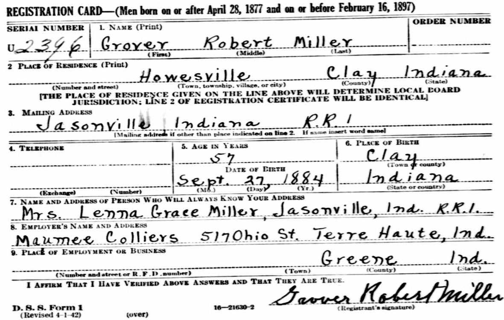

Grover Robert Miller 1884 - 1963
[ Home ] | [ Calendar ] | [ Surnames Index ] | [ Family History ]The son of Henry Miller and Charlotte PoolGrover Miller, the third cousin three-times-removed on the mother's side of Nigel Horne, was born in Clay, Indiana, USA on Sep 27, 18841,2,3,4. He married Lenna Vanhorn in Clay on Jun 17, 19112. On Jun 1, 1900, he lived in Owen, Indiana, USA6.
He died on Mar 28, 1963 in Jasonville, Indiana1,3 and was buried at Peavey Cemetery, Howesville, Indiana after Mar 28, 19635.
Parents
- Henry William Charles was born on Jul 5, 1843
- Charlotte Maria was born on Feb 7, 1847
Citations
- Social Security Death Index - Findmypast
- United States Marriages - Findmypast
- United States Obituary Notices - Findmypast
- World War I Draft Registration Cards - Findmypast
- Find A Grave http://www.findagrave.com
- US Census 1900 - Findmypast (was the son of the head of the household)
Media
Grover Miller - WWII Registration Card

Grover Robert Miller
World War I Draft Registration Cards - USM/WWIDR/1669522280
Social Security Death Index - USBMD/SSDI/307052415
United States Marriages - R_1128534868
United States Marriages - FS/MAR/36072999/1
United States Obituary Notices - US/TRIB/035028120
United States Marriages - R_1128534868/1
Family Tree

Generated by ged2site. Last updated on Nov 13, 2024